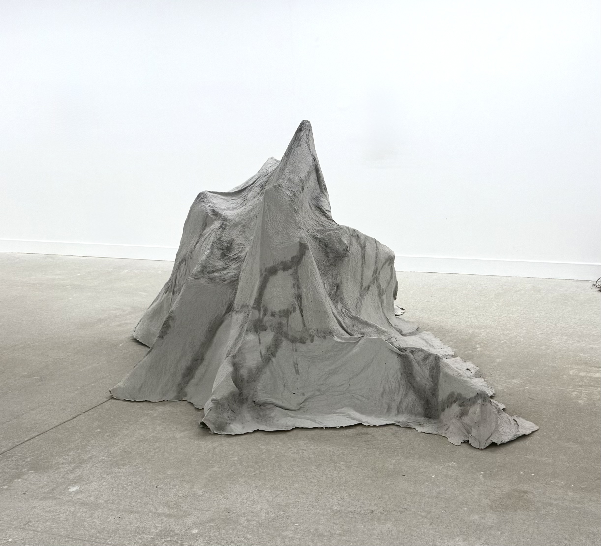
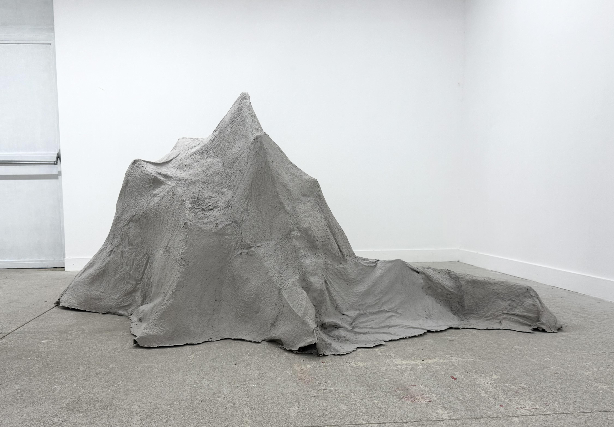
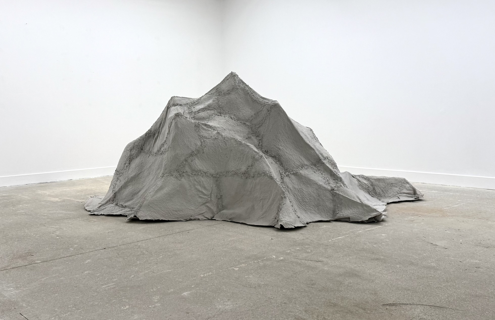
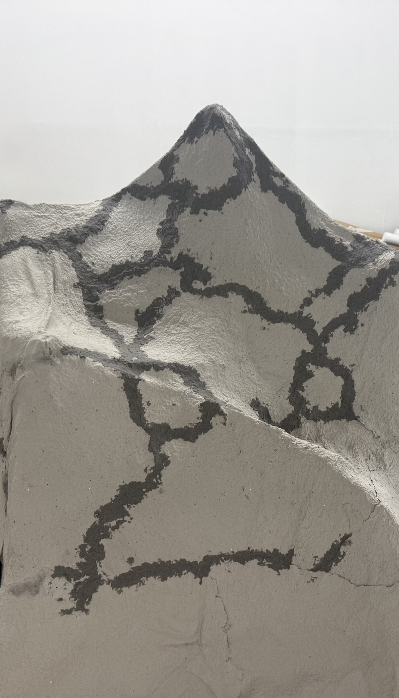
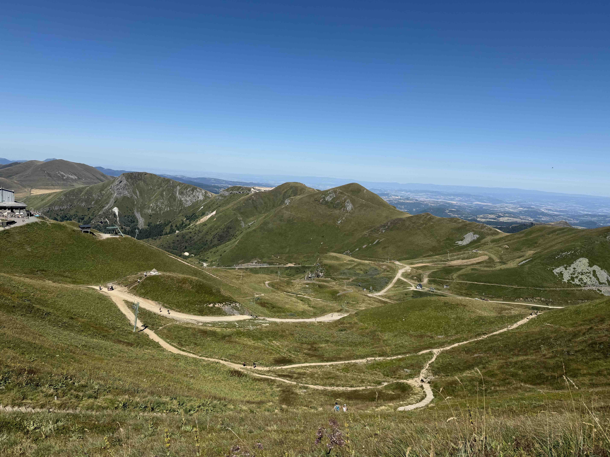

CHEMIN
Cette pièce traduit l’impression d’une montagne mémorisée. J’ai construit une structure de bois et de grillage métallique, que j’ai recouverte de papier mâché. Chaque jointure a été conservée, évoquant les sentiers sinueux laissés par les marcheurs. Après j’ai ré-humidifié ces “sentiers” la couleur a été plus foncée, et puis elle s'est effacée doucement en séchant. Si les pas disparaissent, les chemins s’effaceront lentement, comme une mémoire fragile.
Cela m'a rappelé également "A Line Made by Walking" de Richard Long. Ce geste de humidifier m'a rappelé également les "Dàye" (les aînés) en Chine qui pratiquent la calligraphie au sol avec un gros pinceau et de l’eau : les mots s'évaporent lentement en pratiquant.





